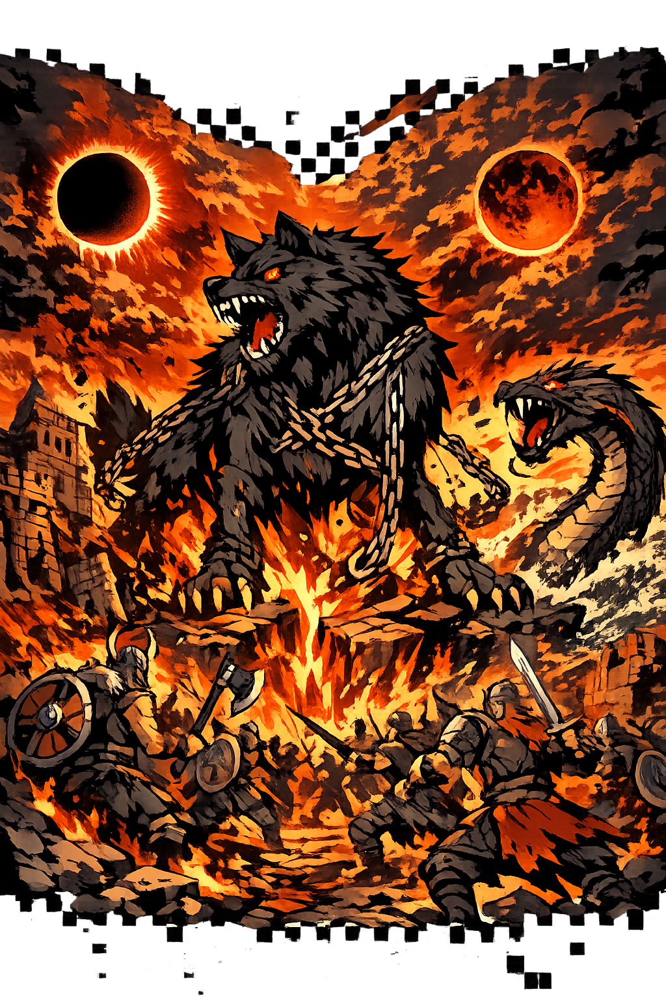

The Authentic Orthography
Doom of the Gods · The Twilight · The Final Battle

Why ragnarǫk.com preserves the Old Norse form
Ragnarǫk
The name in its original Old Norse form. A compound of ragna, the genitive plural of regin ("gods, powers"), and rǫk ("reason, origin, doom"). The ǫ — o-with-ogonek — represents a long back rounded vowel that modern English and Icelandic have lost or transformed. This is the form found in the Prose Edda and the Poetic Edda, the primary sources for Norse mythology.
RAGNAROK
Stripped of its Norse identity, the name was reduced to eight Latin letters. A Marvel franchise. A video game series. A word tossed around to mean any generic catastrophe. The original orthography — the ogonek that marks the long vowel, the compound grammar that binds ragna to rǫk — was erased by systems that only understand A-Z.
Ragnarǫk
The ǫ (U+01EB, Latin Small Letter O with Ogonek) restores the long vowel of the Old Norse original. This is not decoration — it is philological accuracy. The ogonek marks a nasalized or length distinction that the ASCII o cannot encode. The domain resolves to Punycode, but the browser displays the truth.
ragnarǫk.com → xn--ragnark-fnc.com
The non-ASCII character ǫ (U+01EB, Latin Small Letter O with Ogonek) is encoded while the ASCII remains visible. To the DNS, it is Punycode. To the Eddas, it is Ragnarǫk.
How the doom was truly spoken
The Völuspá prophecy and the end of all things
Ragnarǫk is not merely an ending. It is the ending — the cosmic catastrophe foretold in the Völuspá, the prophecy of the seeress who sees all of time at once. The gods know it is coming. They know they cannot stop it. And yet they prepare for it anyway — because that is what warriors do when the final battle is written in the fabric of the world.
Three winters with no summer between them. Snow from all directions. Kinship breaks down. Brothers fight brothers. Fathers kill sons. The wolf Skǫll swallows the sun. His brother Hati swallows the moon. The stars disappear from the sky.
The wolf Fenrir, bound by the gods with the fetter Gleipnir, breaks free. The sea churns as Jǫrmungandr thrashes. The ship Naglfar — made from the untrimmed nails of the dead — is launched. Loki steers it, with the giants of Jǫtunheimr as his crew.
Heimdallr stands on Bifrǫst and blows his horn. The sound is heard in all nine worlds. The gods wake. Óðinn rides to Mímir's well for counsel. The Æsir assemble on the plain of Vígríðr, 100 leagues in every direction.
Surtr comes from the south with fire. The sun turns black. The earth sinks into the sea. The stars vanish. Steam rises. And life as the gods knew it — as the mortals knew it — is consumed in flame and flood.
The final battle and what comes after
Óðinn rides to battle on Sleipnir, wearing his golden helmet, carrying his spear Gungnir. He knows the prophecy. He knows that Fenrir, the wolf he bound, will swallow him whole. And yet he charges. The father of the gods and the monster born of his own blood-ties meet on the field. Fenrir's jaws close around Óðinn. The god is swallowed. His son Víðarr avenges him — stepping on the wolf's lower jaw, grasping the upper, and tearing the beast apart. But Óðinn does not return. The All-Father dies as he lived: facing the inevitable with courage he did not need to have.
Þórr, the strongest of the gods, faces his ancient enemy — the World Serpent, Jǫrmungandr, whom he once fished from the sea. They have hated each other since before the world was arranged. Þórr strikes the serpent with Mjǫllnir, his hammer. The blow is true. The serpent dies. But the venom of the World Serpent covers Þórr. He walks nine paces — and falls. The thunderer, the protector of mankind, the god who never stopped fighting for the world, dies saving the world that is already ending. His sons Móði and Magni inherit the hammer. But they inherit it in a world of ash.
Freyr, the god of sunshine and rain, of growth and harvest, faces Surtr — the fire giant from Múspell, wielding a flaming sword that shines brighter than the sun. Freyr fights bravely. But he gave his sword to his servant Skírnir in exchange for the giantess Gerðr. He fights with a stag's antler. He falls. The god who made the earth fertile dies because he chose love over war. It is perhaps the most human moment in all of Ragnarǫk — a reminder that even gods make choices they cannot undo.
Loki, the father of lies, the mother of monsters, the god who was never fully one of the Æsir, faces Heimdallr — the watchman of the gods, the one who never slept, the one who saw everything. They kill each other. It is fitting: the all-seeing guardian against the master of deceit. In some tellings, Loki fights with a sword; in others, with his wits until the very end. Heimdallr's horn, Gjallarhorn, has already sounded. There is nothing left to guard. The watchman and the thief die together, as they always knew they would.
The earth rises again from the sea, green and beautiful. The sun has a daughter, no less bright. Víðarr and Váli survive. Móði and Magni inherit Mjǫllnir. Baldr and Höðr return from Helheimr, reconciled. Two humans, Líf and Lífþrasir, have hidden in Hǫðdmímis holt — the wood of Mímir's grove — and they repopulate the world. The gods meet at Iðavǫllr, where Ásgarðr once stood. Ragnarǫk is an ending, but it is also a beginning. The Norse cosmos is not linear — it is cyclical, woven from the same threads again and again, each time slightly different, each time the same.
Forms across time and orthography
The Old Norse form preserved in the Poetic Edda and Prose Edda, with the ogonek marking the long back rounded vowel. This is the scholarly standard for Old Norse studies.
The stripped Latin form used in DNS, modern branding, and popular media. All phonetic and orthographic distinctions are flattened to seven basic letters.
The modern Icelandic form, with umlaut (ö) instead of ogonek (ǫ). Icelandic underwent a sound shift that changed the old ǫ to ö. This is the form most Icelanders would recognize today.
Note on orthography: Ragnarǫk preserves the Old Norse orthography with o-with-ogonek (ǫ, U+01EB), while Ragnarök uses the modern Icelandic umlaut (ö, U+00F6). Both represent legitimate scholarly traditions, but the ǫ form is preferred for Old Norse textual studies because it distinguishes the historical vowel from the modern Icelandic reflex. The PUNYCODEX restoration uses ǫ to honor the Eddas in their original orthography.
Ragnarǫk is not merely an event. It is the fulfillment of the Norse cosmos — the catastrophe that was built into the world from its first day. The gods knew it was coming. The giants knew it was coming. The serpent and the wolf knew. Only humanity was kept in the dark, and even they heard the prophecy in the Völuspá.
This is not a directory. This is a resurrection.
Enter the CodexSee how Ragnarok behaves in the PUNYCODEX Type Tool — with predictive autocomplete, character-by-character breakdown, and scholarly constraint validation.
ragnarok
→
Ragnarǫk